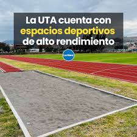

← Volver
CANCHAS DE LA UNIVERSIDAD TÉCNICA DE AMBATO
Las áreas de cancha en una universidad cumplen un papel fundamental en la formación integral de los estudiantes. Estos espacios no solo están destinados a la práctica de deportes, sino que también promueven el bienestar físico, mental y social de la comunidad universitaria. Al facilitar la actividad física, las canchas contribuyen a mejorar la salud, reducir el estrés académico y fomentar hábitos de vida saludables.
